인천의 유일한 조직
서귀란과 후계자 서주하, 양딸이자 2인자였던 차유림이 만석동과 내항·연안부두를 함께 지배했다.
INCHEON · 2026

15년 전, 두 개로 갈라진 조직
그 사이 숨겨진 진실
아래에서 자세히 확인하세요.
NINETY DAYS
두 조직의 15년은 하나의 연대기다. 같은 밤에서 갈라져 나와, 같은 항구에서 끝난다.
서귀란과 후계자 서주하, 양딸이자 2인자였던 차유림이 만석동과 내항·연안부두를 함께 지배했다.
서주하가 조직의 금지된 라인을 끊으려 하자 귀란이 직접 딸을 죽였다.
그 밤 차유림이 두목의 목을 노렸으나 실패했다. 귀란의 목에 자상만 남긴 채 오지안과 함께 인천을 떠났다.
유림은 빚에 끌려온 여자와 범죄에 휘말린 여자들을 골라 거뒀다. 숨을 곳 대신 장부와 가게, 결정권을 나눠주며 자기 세력을 만들었다.
처음으로 자기 몫의 권력을 받은 여자들이 하나의 조직으로 인천에 돌아왔다. 같은 해 정윤아가 동인천·신포동의 밤을 맡았다. 흑조에게 명월은 두목을 죽이려 든 배신자 집단이다.
명월은 사채와 도박, 약점과 도장으로 세력을 불렸다. 흑조는 동인천·신포동의 유흥과 사채, 시청 라인을 하나씩 빼앗겼고 남은 핵심은 만석동과 내항·연안부두뿐이다.
국내 판매망을 완성한 유림이 이탈리아 마피아에 먼저 거래를 제안한다. 리비아는 항구를 계약의 조건으로 내건다.
본가의 파트너 확정까지 90일. 명월은 계약을 따내기 위해 흑조를 없애고 항만망 전체를 노린다.
두 문은 같은 진실로 이어진다.